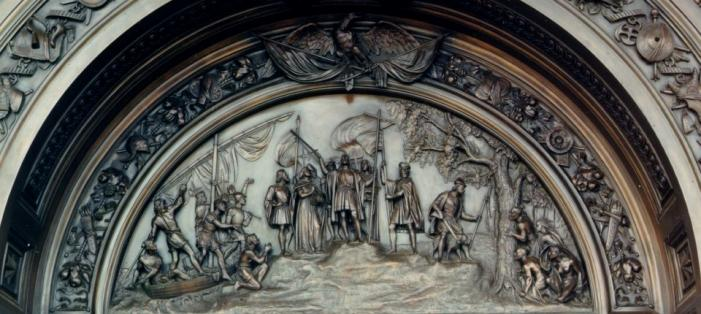
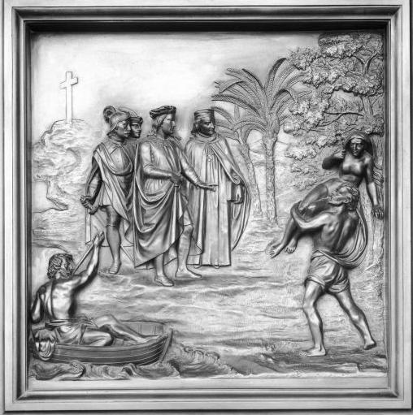
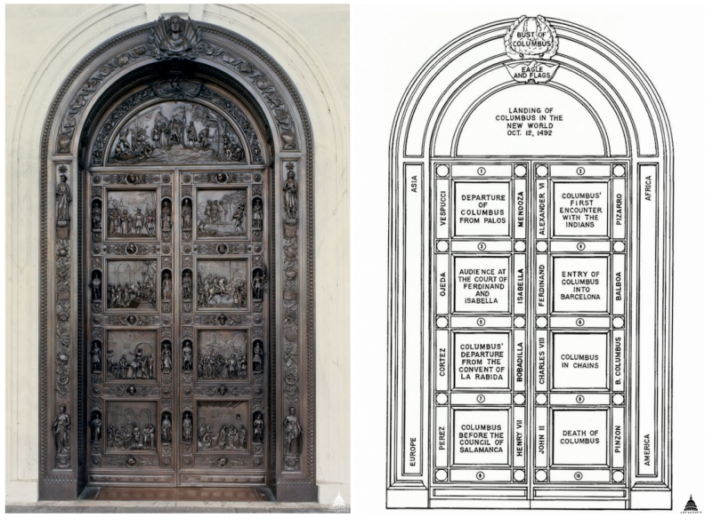

2022-06-18 08:00

There is a bill before the Massachusetts legislature asking that Massachusetts join Vermont and Maine in changing Columbus Day to Indigenous People’s Day. Yet for some reason several of our local state representatives are hesitant to move the bill forward. Perhaps they have forgotten the ugly, brutal history associated with the discoverer of the New World, Cristoforo Colombo, otherwise known as Christopher Columbus.
In the Fifties every kid could recite the poem, “In fourteen hundred ninety-two Columbus sailed the ocean blue…” We learned that Columbus had made an astounding “discovery” of “America” — although it was hardly new to the Arawak and Taino people who had lived there for millennia. For them it was simply home.
We learned that Columbus was a Genoan explorer who finally persuaded a Spanish queen to underwrite his voyages in exchange for a cut of the plunder. Accompanying Columbus in the Niña, Pinta, and Santa Maria were 87 men. Encountering the Arawak people on what is now the island of San Salvador in the Bahamas, Columbus dubbed them “indios” and noted:
“They ought to make good and skilled servants, for they repeat very quickly whatever we say to them. I think they can very easily be made Christians, for they seem to have no religion.”
Whereupon Columbus immediately enslaved several, forcing them to show where they had obtained the gold in their earrings. Columbus explored a few more neighboring islands, including what is now Cuba and Haiti. Upon his return, the Portuguese royalty were unhappy at the Spanish royalty’s incursion, so four Papal Bulls (Vatican decrees) were issued to specify how the two Christian kingdoms would divvy up the spoils.

The following year, a second voyage of 17 ships explored a dozen other islands. On the island of Santa Cruz Columbus encountered Caribs, whom they murdered, gutted, and beheaded. The historical record also includes an account of the rape of a Carib woman by one Michele da Cuneo, a childhood friend of Columbus.
Spanish troops remaining on the various islands Columbus visited killed indigenous people at will, forcing them to carry the new slaveholders on litters, like royalty. As King Leopold of Belgium later did in the Congo, the Spanish gave native people quotas of gold to bring to the colonizers. The consequence for failing to deliver was being maimed or murdered.
By now we all remember the breach of the U.S. Capitol Building by insurrectionists on January 6, 2021. One of these breaches occurred at the Rogers Doors on the east entrance to the Capitol. The two doors are almost 17 feet high and 10 feet wide, made of bronze, each weighing 5 tons. Completed in 1861 by sculptor Randolph Rogers, the doors tell the story of Christopher Columbus.

The semicircular panel “Landing of Columbus in the New World” depicts the terror of native people encountering the heavily-armed Spanish. Another panel “Columbus’ First Encounter with the Indians” depicts a rape like the previously-mentioned one.
Howard Zinn may have upset more than a few people when he recounted the grisly details of European conquest in his history books, but all this was old history when the Rogers Doors were cast in bronze. At the time, 1861, the mistreatment, colonization, and enslavement of native people was seen as inevitable — if not desirable — when creating an American empire. And 1861 was the very moment in American history in which the government itself was involved in the genocide and ethnic cleansing of Native American people.
So here we are in 2022. Rather than continuing to honor Columbus for what in modern times can only be regarded as war crimes, it’s time we honored the indigenous people whose old world became our New World.
Please sign the petition to persuade your representative to get behind H.3191 — or just call them.